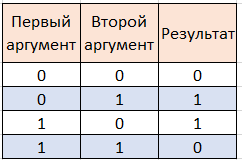
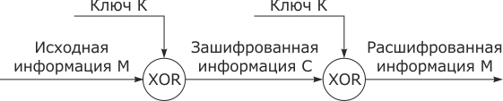

Историческая справка:
В 1917 году Гилберт Вернам, работавший в компании AT&T(Американская телефонная и телеграфная компания), разработал устройство для шифрования одновременно с передачей по телеграфу.
Устройство подключалось к телеграфному аппарату и осуществляло логическую операцию XOR над символом открытого текста и символом ключа накладываемой «гаммы», подаваемой на отдельной ленте.

Логическая операция XOR - это булева функция, таблица аргументов этой функции и соответствующих значений приведена выше.
Буквы открытого текста и ключа кодировались определенным образом(например, буква А равна 0001, B - 0010 и тд.) и операция XOR проводилась над кодами каждого символа.
Устройство позволяло осуществлять шифрование или дешифрование текста, передаваемого по телеграфу, причем без участия шифровальщика.
Для его абсолютной криптографической стойкости требовалось соблюдать ряд требований:
• Последовательность символов на ленте должна была быть случайной;
• Количество символов ключа должно совпадать с количеством символов открытого текста;
• Использовать каждую ленту можно только один раз, после лента должна быть уничтожена;
Это затрудняло практическое применение данного шифра.
Получив сообщение, противник должен установить верную гамму для прочтения сообщения. При некоторых значениях гаммы противник будет получать разные осмысленные сообщения, у которых совпадает лишь длина. Для любого сообщения может быть представлена гамма, преобразующая его в перехваченный шифртекст.

Однако шифр Вернама имеет существенные недостатки:
- Для обеспечения абонентов ключами требуется передавать большой объем информации по защищенному каналу связи;
- В связи с большим объемом ключей требуется вырабатывать значительный объем случайных данных;
- Шифр совершенно неустойчив к подмене – противнику легко подделать шифртекст.
Поэтому в настоящее время шифрование Вернама используется достаточно редко, однако оно применяется для защиты особо важных линий связи с относительно небольшим объёмом информации.
Например, англичане и американцы использовали шифры типа Вернама во время Второй мировой войны. Шифр Вернама по модулю 2 использовался на правительственной «горячей линии» между Вашингтоном и Москвой, где ключевые материалы представляли собой бумажные ленты, на которые знаки ключевой последовательности наносились с помощью перфорации.